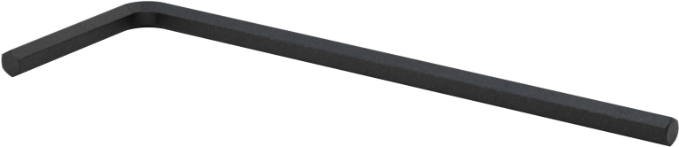
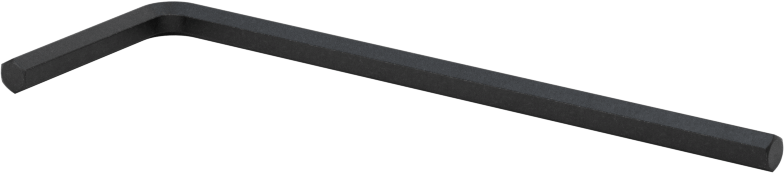
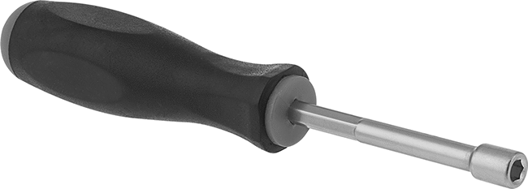
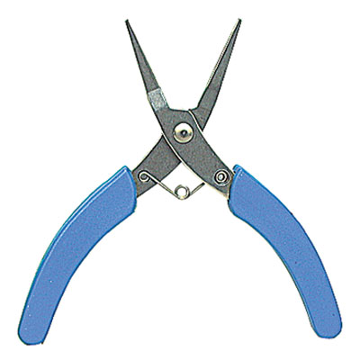
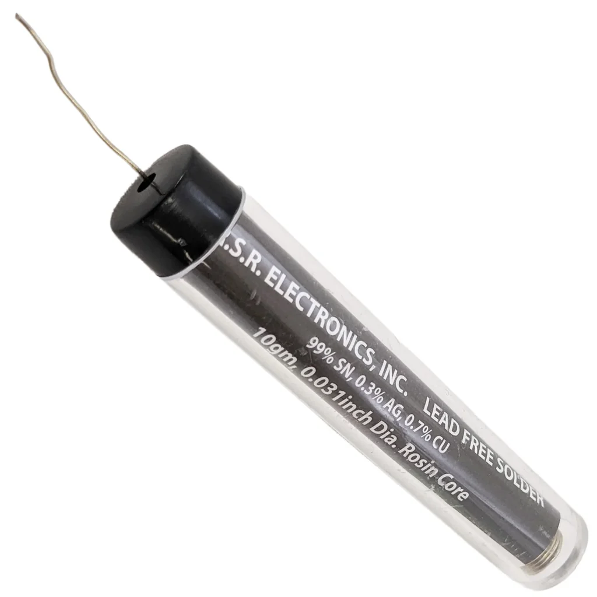
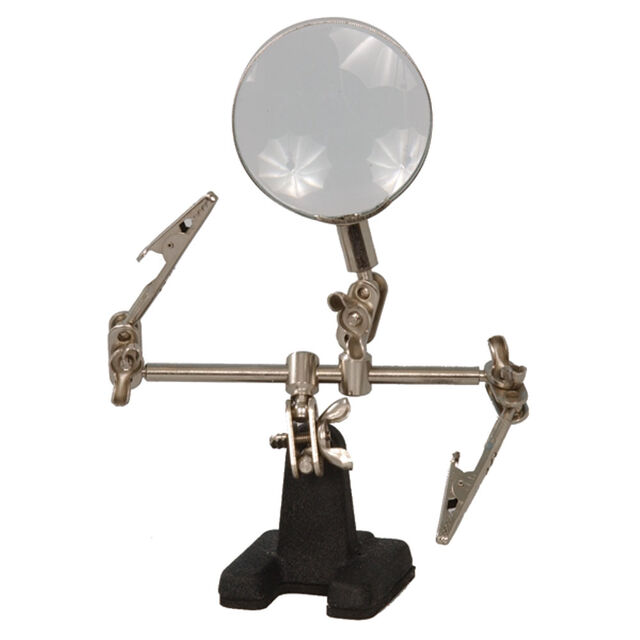
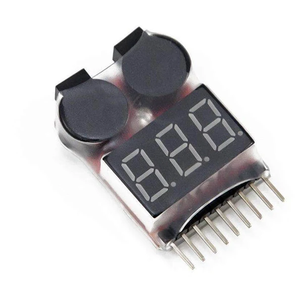
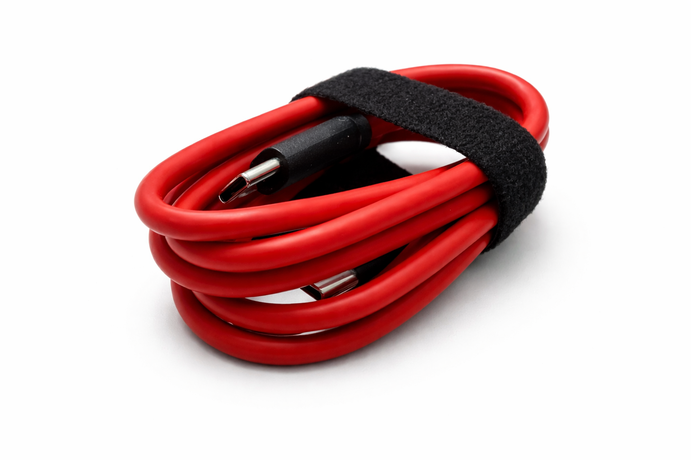

HAMR II Builder Tools Inventory
Use this page during assembly. It shows the tools, safety items, and cables used in the HAMR II tasks. Click any image to enlarge it at the bench.
Distinct Tool Types
14
Hand tools, safety items, bench-support items, test items, and cables listed on this page.
Issued Quantity
16
Total quantity listed, counting duplicate Allen keys.
| Picture | Item | Short Description | Per System |
|---|---|---|---|

assets/images/tools/allen15.png
|
M1.5 Allen key
|
Used on M2 camera screws and the M2.5 × 6 battery-connector screws at the ESC. | 1 |
|
 assets/images/tools/allen20.png
|
M2 Allen key
|
Used on the Raspberry Pi mounting screws and frame hardware that takes a 2.0 mm driver. | 2 |
|
 assets/images/tools/allen25.png
|
M2.5 Allen key
|
Used on M3 socket-head screws such as the GPS hardware and camera/GPS mount hardware. | 2 |
|
 assets/images/tools/driver55.png
|
M5.5 nut driver
|
Used on M3 lock nuts in the GPS and FC/ESC stack tasks. | 1 |

assets/images/tools/m8driver.png
|
M8 nut driver
|
Used on the propeller lock nuts. | 1 |
|
 assets/images/tools/pliers.jpg
|
Pliers
|
Holds small hardware and removes pushed-through print debris. | 1 |

assets/images/tools/shear-cutter.jpg
|
Snips
|
Trims wire and cable ties when directed. | 1 |

assets/images/tools/eyepro.png
|
Eye protection
|
Required for soldering and any task that can shed debris. | 1 |

assets/images/tools/soldering-station.jpg
|
Soldering station
|
Used to solder the Raspberry Pi header and SIP switch. | 1 |
|
 assets/images/tools/solder.webp
|
Roll of solder
|
Solder wire for the Raspberry Pi through-hole joints. | 1 |

assets/images/tools/micro_sd_adapter.png
|
microSD card
|
Issued card used with the Raspberry Pi when directed. | 1 |
|
 assets/images/tools/3rd-hand.jpg
|
Helping hand
|
Holds small parts steady during bench work. | 1 |
|
 assets/images/tools/lipo-tester.webp
|
LiPo battery tester
| Measures total battery voltage during sensor calibration. | 1 |
|
 assets/images/tools/usb-c-cable.png
|
USB-C cable
|
Connects the PC to the flight controller for Mission Planner tasks. | 1 |